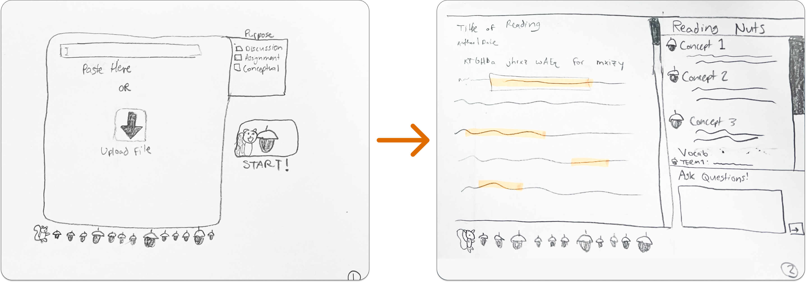

How Might We Make Reading Engaging for University Students?
Responsibilities
UX Designer, Full Stack Developer
Collaborators
Software Engineers: Kylee Kazenski, Marcus Johnson, and Chris Fakhimi
Project Duration
3 months, 6hrs/week
Tools
Figma, OpenAI API, ReactJS, Python Flask
Overview
Our team explored undergraduate students’ difficulty completing class readings and found that they struggled to get started and stay engaged with their readings. We successfully made reading less intimidating and more engaging by providing students with tools to set reading goals and interact with the text.
As someone who fell into the target user group, this project challenged me to identify and remove my personal bias, instead channeling my experience towards building empathy.
Secondary Reserach
Less than 30% of undergraduate students complete required readings
and from 2012 to 2022, there was an 8% decrease in the number of adults in the United States who read one or more books, According to the National Endowment of the Arts.
Reading and writing are the most accessible and fastest forms of mass communication and learning, vital to both students and adults throughout their careers.
According to Kerr, there are four main factors behind college students’ lack of reading:
Unprepared-ness
Lack of motivation
Time constraints
Underestimation of reading importance
We wanted to disrupt this decline and make reading engaging for university students.
Contextual Inquiry
Thinking “Outside the Book” and into the Context of Student Studying
To understand whether or not students complete their assigned readings for class and what factors go into why, we performed contextual inquiry and interviews.
We recruited four undergraduate students from a variety of academic backgrounds and levels of enjoyment of reading:
To get as close to their typical reading environment as possible, we asked participants to bring an assigned reading and we met them where they typically do their reading assignments and observed them reading.
Afterwards, we asked questions to understand their feelings about their assigned readings, what motivated them, what successes they had, obstacles they faced, and personal reading skills and tools they had developed, based on our observations.
Analysis
Reading Between the Lines
After downloading our data and affinity diagramming, we found some high level patterns:
We found that students developed their own personal reading tools and strategies.
Physical Reading Tools:
Docs for note-taking on computer, Legal pad
Pen, highlighter
Physical printed copies of readings
Mental Reading Strategies:
Setting expectations for reading depth based on assignment
Identifying key concepts based on structure of reading (skimming)
“Pre-reading” to identify key concepts in larger reading
Creating environment conducive to focus
Time Blocking
Notably, the purpose of these tools, as described by the participants, is not to understand the reading better, but to get started and stay engaged with the reading.
“I use audiobooks even when I'm reading… it just keeps me locked in.”
- Pre-Medicine Student
Students need clear reading expectations and goals, because they struggle to get started when they don't know the expected depth of understanding.
Students need to stay engaged while reading, because they struggle to get started again once they’ve lost focus.
AI Design
Designing a reading “AI”de
Our team was tasked with using AI to solve the students’ needs. Rather than slapping a chatbot onto our solution, we looked to the intersection of applications of AI and the students’ needs and reading habits we discovered.
We found that students placed the most trust in AI to:
Summarize and label large bodies of text
Identify key concepts
Visualize information
Predict trends
Input and output information in different formats and modalities
“When we look at tech, the first question we ask ourselves as a design team and an innovation team is, is this going to make the experience more human or less?”
—Chris Waugh, Chief Innovation Officer at Sutter Health
Our team sought to design a tool that, rather than doing the critical thinking and comprehension for them, helped students engage with the text.
Ideation
No Writer’s Block Here!
In our ideation phase, we discussed the intersection of user’s reading needs and AI capabilities, gamification, ways to reduce intimidation, pre-reading strategies, helping users identify key concepts, mappings between reading strategies and input and output modalities, and helping users leave the reading experience feeling successful so that they feel capable before starting their next reading.
Chris developed two prototypes for silly/potentially outrageous ideas. These prototypes allowed us to gauge the boundary between approachable and empowering versus silly and belittling to address the user pain of reading intimidation.
Marcus developed a prototype for the pre-reading process to test our design goal of alleviating challenges to starting the reading by incorporating features that help students set reading expectations to reduce the intimidation factor associated with academic readings.
We mapped our digital active reading prototypes to the way students organized their physical space while reading:
Most students placed their reading to the left and any active reading tools to the right, with assignment instructions associated with the reading placed peripherally.
Kylee focused on the user experience of active reading, prototyping a reading dashboard that helped us test our design goal of assisting in improving reading attention and active engagement.

I developed a prototype that focused on a user flow encompassing pre-reading, active reading, and final reflection. We used this prototype to gauge whether our prototype’s flow matched users’ reading workflow and whether they were able to understand the mental model we created to match the digital reading experience to their physical active reading process.
To check out all low-fidelity prototypes for yourself, click here !
Iteration
Another Edit Pass
After presenting our low-fidelity prototypes to students, we found that the user flow and spacial organization of our designs resonated with them and matched their mental model.
“It would keep me attached to the reading while also helping to pick out those key ideas and concepts.”
- History Student
Our prototypes showed promise of helping students stay engaged with the reading. We found that students preferred the AI features that were well defined and had less open-eneded input. They looked for some playfulness in the theme and styles of the interface, but ultimately wanted the key features to be serious and functional in nature.
As a team, we also performed a heuristic evaluation focusing on the usability measures we felt best accounted for the user needs of an engaging and approachable tool: aesthetic and minimalist design, match between system and the real world, consistency and standards, flexibility and efficiency of use, and error recovery.
Based on our feedback and evaluation, we made the following updates to our prototypes:
Enforcing consistency in AI outputs rather than placing weight on users to verify
More obvious affordances to undo, go back, and save progress
More interactive features that are multiple choice rather than open-ended
More squirrel imagery
Character Design
The Supporting Character
Although the squirrel imagery was a small part of our prototypes, it stood out to every person we interviewed.
“I do like the idea of, like, a cute little reading buddy, almost like Duolingo. I think the acorn imagery also works really well because it's kind of like an idea of growth.”
- Pre-Medicine Student
Students saw the squirrel as a supportive and motivating figure, akin to studying with a friend. We leaned into this theme and I developed a set of consistent imagery of a squirrel working to act as a role model and friend.
“I like the squirrel at the end … It would motivate me”
- Neuroscience Student
I used a sleek design with limited colors to keep an approachable character look that delights with a professional level of quality that students would not be embarassed to use in public.
We used the squirrel sparingly, at key moments in the study experience where a friend might typically be involved: setting pre-reading goals and during post-study celebration and reflection to help make the study experience more approachable and memorable.